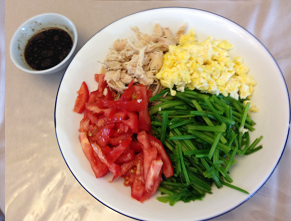

#1 - EASY COLD NOODLES - 涼麵
My mom used to make me this dish when I was young as a school packed lunch.
It is simple and nutritious.
My classmates used to be very jealous of yummy home lunch.
I wrote this recipe for my old classmate a few years ago when we recollected our childhood memories at a re-union.

INGREDIENTS:
- 1 instant noodle / 60g any kind of noodle
- 1 egg
- 1 slice cooked ham / some cooked chicken
- 2 kinds of vegetable (1 tomato, 1/2 cucumber, 1 carrot...)
SAUCE:
- 1 TBSP soy sauce
- 1 TBSP vinegar
- 1 TBSP cold water
- 1/2 TBSP sugar
- Sesame oil
- White pepper
Directions:
- Beat egg is a bowl. Put some oil in a frying pan. Heat up the oil, add the egg in and scramble it.
Remove the cooked egg onto a chopping board.
- Put some water into the pot and bring to boil. Put the noodle into the pot and cook until done. Remove and rinse in cold water.
- Put a little bit salt and vegetable oil onto the noodle and toss. Arrange the noodle on a serving plate.
- On the chopping board, cut the scramble egg into small pieces. Place on the noodle.
- Cut ham or chicken into julienne. Place onto the noodle.
- Cut the vegetables into fine julienne and put onto the noodle.
- Put all ingredients for the sauce into a small bowl and mix well.
- Pour the sauce onto the noodle and serve. Add your favorite hot sauce to the noodle for additional flavor.
(Serves 1 person)
Note:
- You can use any fresh vegetable you like (raw or lightly blanched). Here are some that I like to use sometimes: bell pepper, bean sprout, snap peas, or even mango...